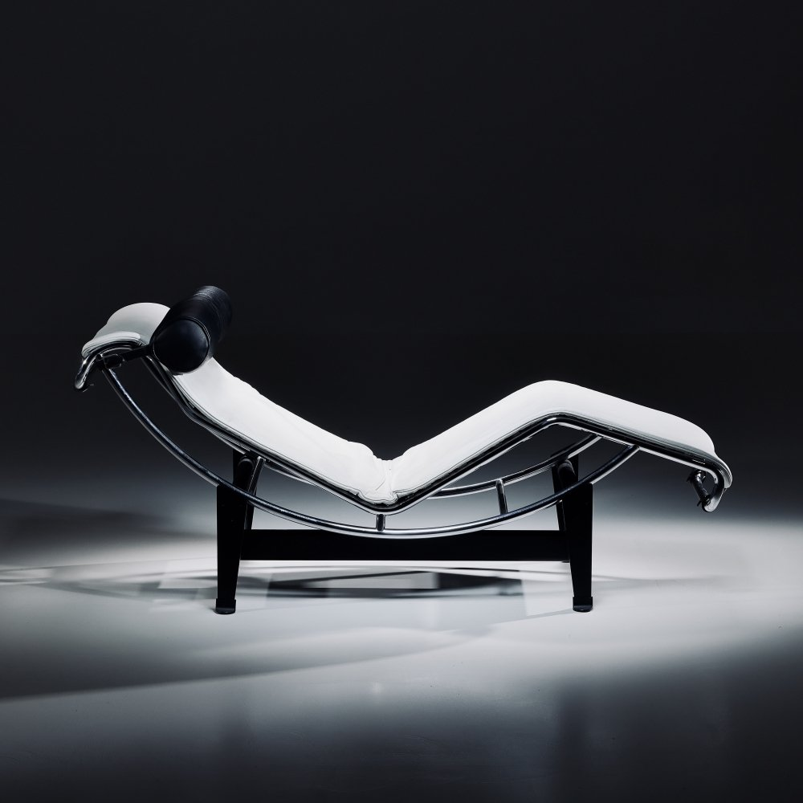

Charlotte Perriand was a pioneering French
architect and designer renowned for her
contributions to modern architecture and
furniture design. She collaborated with Le
Corbusier and Pierre Jeanneret, co-designing
iconic furniture pieces like the B306 chaise
longue. Perriand's work emphasized
functionality, simplicity, and the innovative use
of materials. She was a key figure in the modern
movement, advocating for designs that were
accessible and conducive to comfortable living
spaces. Her legacy includes significant
architectural projects and furniture designs that
continue to influence the field.
Perriand's design philosophy emphasized functionality and accessibility, often
blending natural materials with modern techniques. Her work in Japan during
World War Il influenced her approach, integrating Japanese simplicity with
European functionality. Notably, she contributed to the design of ski resorts in
the French Alps, such as Les Arcs, showcasing her commitment to integrating
architecture into its natural surroundings and her focus on user needs.
Charlotte Perriand remains celebrated for her visionary approach to design,
seamlessly merging aesthetics with practicality and advocating for the social
responsibility of design. Her legacy continues to influence the fields of
architecture and design worldwide.
Furnitures

Chaise Longue (LC/4)
Le Corbusier (Charles-Édouard Jeanneret), Pierre Jeanneret, Charlotte Perriand, 1920s
Easy Chair (Fauteuil Grand
Confort)
Charlotte Perriand, Le Corbusier (Charles-Édouard Jeanneret)，1959
Daybed from the Maison du Brésil
Churlotte Pemand Le Corbankt (Charkes Cdouand
leannetrt)s1959